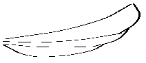
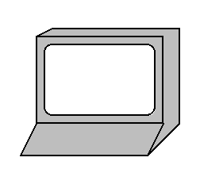

7 更多的图画构造器
7.1 Dingbats
procedure
w : real? h : real? color : (or/c string? (is-a?/c color%)) = "gray"
style :
(listof (or/c 'square 'nw 'ne 'sw 'se 'wide)) = null
在 style 中提供 'nw (西北), 'ne (东北), 'sw (西南) 或 'se (东南) ,可以将云扩展到更好地覆盖其边界框内相应方向的角落。 'square 风格是所有这些风格的简写。 'wide 风格增加了云的顶部和底部边缘的凸点数量。


Changed in version 1.6 of package pict-lib: 增加 style 。


procedure
(standard-fish w h [ #:direction direction #:color color #:eye-color eye-color #:open-mouth open-mouth]) → pict? w : real? h : real? direction : (or/c 'left 'right) = 'left color : (or/c string? (is-a?/c color%)) = "blue" eye-color : (or/c string? (is-a?/c color%) #f) = "black" open-mouth : (or/c boolean? real?) = #f
open-mouth 参数可以是 #f (嘴巴关闭), #t (嘴巴完全张开),或者一个数字: 0.0 是关闭, 1.0 是完全张开,介于两者之间的数字是部分张开。
> (standard-fish 100 50)
> (standard-fish 100 50 #:direction 'right #:color "chocolate") > (standard-fish 100 50 #:eye-color "saddlebrown" #:color "salmon") > (standard-fish 100 50 #:open-mouth #t #:color "olive")


procedure
(jack-o-lantern size [ pumpkin-color face-color stem-color]) → pict? size : real? pumpkin-color : (or/c string? (is-a?/c color%)) = "orange" face-color : (or/c string? (is-a?/c color%)) = "black" stem-color : (or/c string? (is-a?/c color%)) = "brown"
> (jack-o-lantern 100)
> (jack-o-lantern 100 "cadet blue" "khaki" "salmon")


procedure
(angel-wing w h left?) → pict?
w : real? h : real? left? : any/c
> (angel-wing 100 40 #f) 
> (angel-wing 100 40 #t)
style 可以包括以下任何一种:
'plt —
在机器的屏幕上包括一个 Racket 标志 'binary —
在机器的屏幕上显示 1 和 0 'devil —
和 'binary 一样,同时给机器加上角和尾巴
> (desktop-machine 1) 
> (desktop-machine 1 '(devil plt)) > (desktop-machine 1 '(plt binary))
procedure
(thermometer [ #:height-% height-% #:color-% color-% #:ticks ticks #:start-color start-color #:end-color end-color #:top-circle-diameter top-circle-diameter #:bottom-circle-diameter bottom-circle-diameter #:stem-height stem-height #:mercury-inset mercury-inset]) → pict? height-% : (between/c 0 1) = 1 color-% : (between/c 0 1) = height-% ticks : exact-nonnegative-integer? = 4 start-color : (or/c string? (is-a?/c color%)) = "lightblue" end-color : (or/c string? (is-a?/c color%)) = "lightcoral" top-circle-diameter : (>/c 0) = 40 bottom-circle-diameter : (>/c 0) = 80 stem-height : (>/c 0) = 180 mercury-inset : (>/c 0) = 8
水银是以同样的方式绘制的,但是通过创建从绘制温度计边界的版本中插入的三个组件。 这种嵌入由 mercury-inset 参数控制。
温度计中水银的高度是由 height-% 参数控制的。 它的颜色是在 start-color 和 end-color 之间插值的,由 color-% 参数决定。
最后,根据 ticks 参数,画出一定数量的ticks。
> (thermometer #:stem-height 90 #:bottom-circle-diameter 40 #:top-circle-diameter 20 #:mercury-inset 4)
procedure
(standard-cat width height #:left-ear-extent left-ear-extent #:left-ear-arc left-ear-arc #:left-ear-angle left-ear-angle #:right-ear-extent right-ear-extent #:right-ear-arc right-ear-arc #:right-ear-angle right-ear-angle #:fur-color fur-color #:fur-border-color fur-border-color #:lip-color lip-color #:lip-border-color lip-border-color #:lip-border-width lip-border-width #:eye-color eye-color #:nose-color nose-color #:nose nose #:happy? happy? #:eyes eyes #:left-eye left-eye #:right-eye right-eye #:whisker-length whisker-length #:whisker-droop whisker-droop #:whisker-width whisker-width #:whisker-color whisker-color #:whisker-inset? whisker-inset? #:border-width border-width) → pict? width : positive? height : positive? left-ear-extent : (>=/c 0) left-ear-arc : (real-in 0 (* 2 pi)) left-ear-angle : (real-in 0 (* 2 pi)) right-ear-extent : (>=/c 0) right-ear-arc : (real-in 0 (* 2 pi)) right-ear-angle : (real-in 0 (* 2 pi)) fur-color : (or/c #f string? (is-a?/c color%)) fur-border-color : (or/c #f string? (is-a?/c color%)) lip-color : (or/c #f string? (is-a?/c color%)) lip-border-color : (or/c string? (is-a?/c color%)) lip-border-width : (or/c #f (real-in 0 255)) eye-color : (or/c #f string? (is-a?/c color%)) nose-color : (or/c #f string? (is-a?/c color%)) nose : pict? happy? : any/c eyes : (or/c #f pict?) left-eye : (if eyes (or/c #f pict?) pict?) right-eye : (if eyes (or/c #f pict?) pict?) whisker-length : positive? whisker-droop : real? whisker-width : (or/c #f (real-in 0 255)) whisker-color : (or/c string? (is-a?/c color%)) whisker-inset? : any/c border-width : (or/c #f (real-in 0 255))
whisker-width 参数可以是 #f (没有胡须),也可以是 0 到 255 之间的实数来指定笔的宽度。 同样,对于 border-width, 猫脸周围可以没有边界,也可以有一个自定义宽度的边界。
每只猫的耳朵可以有一个自定义的范围(长度)、一个弧长(宽度)和角度(在头部的位置)。 耳朵的弧长和角度都有限制,以防止重叠。 默认的耳朵角度取决于耳朵的弧长,以使默认的定位更合理。默认的耳朵范围是猫脸高度的 1/4。
> (standard-cat 100 90) > (standard-cat 100 90 #:happy? #t) > (standard-cat 100 90 #:left-ear-arc (* pi 1/8) #:right-ear-extent 30)
Added in version 1.10 of package pict-lib.
7.2 Balloon Annotations
| (require pict/balloon) | package: pict-lib |
procedure
(wrap-balloon pict spike dx dy [ color corner-radius]) → balloon? pict : pict? spike : (or/c 'n 's 'e 'w 'ne 'se 'sw 'nw) dx : real? dy : real?
color : (or/c string? (is-a?/c color%)) = (current-balloon-color) corner-radius : (and/c real? (not/c negative?)) = 32
spike 参数表示尖峰从气球上突出的角落(即尖峰指向气球上的任何内容)。 例如, 'n 表示 "北",这是在气球顶部中间的一个尖峰。
dx 和 dy 参数指定尖峰应该突出多远。 对于 'w 尖峰, dx 应该是负的,等等。
color 参数是气球的背景颜色。
corner-radius 参数决定了用于圆润气球边角的圆的半径。 像往常一样,如果它小于 1, 那么它就作为气球的宽度或高度的比率。
其结果是一个气球,而不是一幅画。 balloon-pict 函数提取一个 pict,其 bounding box 不包括尖峰, 但包括图像的其他部分,而 balloon-point-x 和 balloon-point-y 函数提取尖峰点的位置。 更典型的是, pin-balloon 函数被用来给图片添加一个气球。
procedure
(pip-wrap-balloon pict spike dx dy [ color corner-radius]) → pict? pict : pict? spike : (or/c 'n 's 'e 'w 'ne 'se 'sw 'nw) dx : real? dy : real?
color : (or/c string? (is-a?/c color%)) = (current-balloon-color) corner-radius : (and/c real? (not/c negative?)) = 32
procedure
(pin-balloon balloon base x y) → pict?
balloon : balloon? base : pict? x : real? y : real? (pin-balloon balloon base at-pict find) → pict? balloon : balloon? base : pict? at-pict : pict-path? find : (pict? pict-path? . -> . (values real? real?))
由此产生的 pict 具有与 base 相同的 bounding box 、下降和上升,即使气球延伸到边界框之外。
> (define a-pict (standard-fish 70 40))
> (pin-balloon (balloon 40 30 5 'se 5 5) (cc-superimpose (blank 300 150) a-pict) a-pict lc-find)
> (pin-balloon (wrap-balloon (text "Hello!") 'sw -5 3) (cc-superimpose (blank 300 150) a-pict) a-pict rt-find)

procedure
w : real? h : real? corner-radius : (and/c real? (not/c negative?)) spike : (or/c 'n 's 'e 'w 'ne 'se 'sw 'nw) dx : real? dy : real?
color : (or/c string? (is-a?/c color%)) = (current-balloon-color)
procedure
v : any/c (make-balloon pict x y) → balloon? pict : pict? x : real? y : real? (balloon-pict balloon) → pict? balloon : balloon? (balloon-point-x balloon) → real? balloon : balloon? (balloon-point-y balloon) → real? balloon : balloon?
value
balloon-color : (or/c string? (is-a?/c color%))
parameter
(current-balloon-color) → (or/c string? (is-a?/c color%))
(current-balloon-color color) → void? color : (or/c string? (is-a?/c color%))
Added in version 1.9 of package pict-lib.
parameter
(balloon-enable-3d on?) → void? on? : any/c
7.3 脸部
value
'unhappy — |
|
|
'sortof-unhappy — |
|
|
'sortof-happy — |
| |
'happy — |
|
|
'happier — |
| |
'embarrassed — |
|
|
'badly-embarrassed — |
| |
'unhappier — |
| |
'happiest — |
|
|
'unhappiest — |
| |
'mad — |
|
|
'mean — |
|
|
'surprised — |
|
|


procedure
(face* eyebrow-kind mouth-kind frown? color eye-inset eyebrow-dy pupil-dx pupil-dy [ #:eyebrow-shading? eyebrow-on? #:mouth-shading? mouth-on? #:eye-shading? eye-on? #:tongue-shading? tongue-on? #:face-background-shading? face-bg-on? #:teeth? teeth-on?]) → pict? eyebrow-kind : (or/c 'none 'normal 'worried 'angry)
mouth-kind :
(or/c 'plain 'smaller 'narrow 'medium 'large 'huge 'grimace 'oh 'tongue) frown? : any/c color : (or/c string (is-a?/c color%)) eye-inset : real? eyebrow-dy : real? pupil-dx : real? pupil-dy : real? eyebrow-on? : any/c = #t mouth-on? : any/c = #t eye-on? : any/c = #t tongue-on? : any/c = #t face-bg-on? : any/c = #t teeth-on? : any/c = #t
eyebrow-kind 决定了眉毛的形状。
mouth-kind 决定嘴的形状,与 frown? 相结合。
frown? 决定嘴巴是向上还是向下。
color 确定脸部的颜色。
eye-inset 调整眼睛的大小;推荐值在 0 到 10 之间。
eyebrow-dy 调整眉毛;建议值:在 -5 和 5 之间。
pupil-dx 调整瞳孔;建议值在 -10 和 10 之间。
pupil-dy 调整瞳孔;推荐值:-15 到 15 之间。
#:eyebrow-shading? 到 #:face-background-shading? 参数控制是否在脸部的某个特定特征上使用阴影(当脸部很小的时候,阴影往往比仅仅抗锯齿看起来更糟糕)。 #:teeth? 参数控制一些嘴部形状的牙齿的可见性。
7.4 Flash
| (require pict/flash) | package: pict-lib |
procedure
(filled-flash width height [ n-points spike-fraction rotation]) → pict? width : real? height : real? n-points : exact-positive-integer? = 10 spike-fraction : (real-in 0 1) = 0.25 rotation : real? = 0
height 和 width 参数决定了在旋转之前绘制闪光的椭圆形的大小。 如果 points 不是 4 的倍数,实际的高度和宽度可能会更小,如果 flash 被旋转,实际的高度和宽度也会不同。
n-points 参数决定了闪光灯上的点的数量。
spike-fraction 参数决定了闪光灯的尖峰与边界椭圆相比有多大。
rotation 参数指定逆时针旋转的角度,单位是弧度。
闪光是以默认颜色绘制的。
> (filled-flash 100 50)
> (filled-flash 100 50 8 0.25 (/ pi 2))


procedure
(outline-flash width height [ n-points spike-fraction rotation]) → pict? width : real? height : real? n-points : exact-positive-integer? = 10 spike-fraction : (real-in 0 1) = 0.25 rotation : real? = 0
> (outline-flash 100 50) > (outline-flash 100 50 8 0.25 (/ pi 2))
7.5 Typesetting Racket Code
procedure
(typeset-code stx) → pict?
stx : syntax?
请注意,如果您在文件端口上使用 read-syntax , 您可能必须通过 port-count-lines! 来打开行数计算,以使代码正确排版。
通常情况下, typeset-code 是通过 code 语法形式使用的, 它可以在编译时正常工作, 并通过 unsyntax 转移到产生图片的代码。 也请参见 define-code 。
stx 中的嵌入式图片被直接使用。 行元素使用和操作符(如 htl-append )进行组合, 所以必要时使用 code-align (见下文)来给无上升的 pict 添加上升。 更确切地说,创建一行代码时使用 pict-last 来确定最近添加到一行中的元素的终点; 主要效果是,当多行pict嵌入 stx 中时,闭合括号会被附在正确的位置。
以 _ 开头的标识符在 pict 中被斜体化,而 _ 则被删除, 除非 code-italic-underscore-enabled 参数被设置为 #f 。 另外,除非 code-scripts-enabled 参数被设置为 #f, 否则 _ 和 ^ 在一个词的中间会分别产生上标和下标(像 TeX 一样); 例如 foo^4_ok 被显示为标识符 foo , 有一个 4 的上标和一个 ok 的下标。
此外,某些标识符在 stx 中的使用会被特别排版:
(code:comment s ...) —
产生一个注释块,每个 s 都在自己的行上,每个 s 必须是一个字符串或图片。 (code:line datum ...) —
对 datum 序列进行排版,这对顶层序列非常有用, 因为 typeset-code 只接受一个参数。 (code:contract datum ...) —
和 code:line 一样,但每个 datum 都被染成注释,并且每一行都有一个 ; 的前缀。 (code:template datum ...) —
像 code:line 一样,但每行都有一个 ; 的前缀。 $ —
排版为一个竖条(没有特别好的理由)。
syntax
(code datum ...)
欲了解更多信息,请参阅 typeset-code 和 define-code, 因为 code 被定义为
> (code (+ 1 2)) > (code (+ 1 #,(+ 1 1)))
> (code (+ 1 #,(frame (code 2)))) > (define-syntax two (make-code-transformer #'(code 2))) > (code (+ 1 two))


parameter
(current-code-font style) → void? style : text-style/c
parameter
(current-code-tt) → (string? . -> . pict?)
(current-code-tt proc) → void? proc : (string? . -> . pict?)
(lambda (s) (text s (current-code-font) ((get-current-code-font-size))))
这个过程不用于排版下标或其他需要改变字体的项目,在那里直接使用 current-code-font 。
parameter
(get-current-code-font-size) → (-> exact-nonnegative-integer?)
(get-current-code-font-size proc) → void? proc : (-> exact-nonnegative-integer?)
parameter
(current-code-line-sep amt) → void? amt : real?
parameter
(current-comment-color) → (or/c string? (is-a?/c color%))
(current-comment-color color) → void? color : (or/c string? (is-a?/c color%))
parameter
(current-keyword-color) → (or/c string? (is-a?/c color%))
(current-keyword-color color) → void? color : (or/c string? (is-a?/c color%))
parameter
(current-id-color) → (or/c string? (is-a?/c color%))
(current-id-color color) → void? color : (or/c string? (is-a?/c color%))
parameter
(current-literal-color) → (or/c string? (is-a?/c color%))
(current-literal-color color) → void? color : (or/c string? (is-a?/c color%))
parameter
(current-const-color) → (or/c string? (is-a?/c color%))
(current-const-color color) → void? color : (or/c string? (is-a?/c color%))
parameter
(current-base-color) → (or/c string? (is-a?/c color%))
(current-base-color color) → void? color : (or/c string? (is-a?/c color%))
parameter
(current-reader-forms syms) → void? syms : (listof symbol?)
procedure
(code-align pict) → pict?
pict : pict?
parameter
(current-keyword-list names) → void? names : (listof string?)
parameter
(current-const-list) → (listof string?)
(current-const-list names) → void? names : (listof string?)
parameter
(current-literal-list names) → void? names : (listof string?)
value
value
parameter
(code-colorize-enabled on?) → void? on? : any/c
parameter
(code-colorize-quote-enabled on?) → void? on? : any/c
parameter
(code-italic-underscore-enabled on?) → void? on? : any/c
parameter
(code-scripts-enabled on?) → void? on? : any/c
syntax
(define-code code-id typeset-code-id)
(define-code code-id typeset-code-id escape-id)
由此产生的 code-id 语法形式需要一连串的 datum :
(code-id datum ...)
它产生一个排版序列的 pict。 datum 的源位置信息决定了产生的 pict 中的代码布局。 code-id 的扩展方式是在编译过程中保留源位置 (所以 typeset-code-id 接收一个完整的源位置的语法对象)。
如果一个 datum 包含 (escape-id expr)—
如果一个 datum 包含 (transform-id datum ...) 或 transform-id 的 transform-id 被作为语法绑定到一个 code transformer 上, 那么 (transform-id datum ...) 或 transform-id 可能被替换成一个转义表达式, 这取决于 code transformer 的结果。
procedure
(make-code-transformer proc-or-stx) → code-transformer?
proc-or-stx :
(or/c (syntax? . -> . (or/c syntax? #f)) syntax?)
value
procedure
(code-transformer? v) → boolean?
v : any/c
对于用 (make-code-transformer proc) 创建的 code transformer , proc 接收一个语法对象,代表与转换器绑定的标识符的使用,它产生一个表达式, 其值在 code 形式或通过 define-code 定义的形式中替换标识符的使用。 和宏转换器一样,代码转换器也是通过在 "应用" 位置使用绑定的标识符来触发的, 在这种情况下,转换器接收整个 "应用" 表单,或者标识符本身也可以触发转换器。 code transformer 的 proc 可以返回 #f, 在这种情况下,标识符的使用将不被转换;如果标识符被用于 "应用" 位置, 转换器 proc 将被再次调用,用于标识符自身的使用。
由 (make-code-transformer stx) 产生的 code transformer 相当于
(make-code-transformer (lambda (use-stx) (if (identifier? use-stx) stx #f)))
一个具有 prop:code-transformer 属性的结构类型实现了一个 code transformer 。 该属性值必须是一个只有一个参数的过程,它接收结构并返回一个过程, 该过程与传递给 make-code-transformer 的 proc 一样, 只是该属性值在要转换的语法对象之前将结构实例作为一个参数。
对于由 make-code-transformer 产生的值或具有 prop:code-transformer 属性的结构类型的实例, code-transformer? 谓词返回 #t ,否则返回 #f 。
> (let-syntax ([bag (make-code-transformer #'(code hat))] [copy (make-code-transformer (syntax-rules () [(_ c) (code (* 2 c))]))]) (inset (frame (code ((copy cat) in the bag))) 2))
syntax
(define-exec-code (pict-id runnable-id string-id) datum ...)
同时, runnable-id 被绑定到一个 syntax object 上, 该对象将 datum 包裹在一个 begin 中。 在这种情况下, _ 被从 datum 中删除,但不包括下面的表达式。 因此, _ 标识符被用来从 pict 中注释掉一个表达式,但让它存在于 syntax object 中进行评估。
string-id 被绑定到 pict 中的代码的字符串表示上。 这个字符串在复制到剪贴板时非常有用 (send the-clipboard set-clipboard-string string-id 0) 。
syntax
(define-exec-code/scale scale-expr (pict-id runnable-id string-id) datum ...)
value
comment-color : (or/c string? (is-a?/c color%))
value
keyword-color : (or/c string? (is-a?/c color%))
value
value
literal-color : (or/c string? (is-a?/c color%))
procedure
(code-pict-bottom-line-pict pict) → (or/c pict? #f)
pict : pict?
procedure
(pict->code-pict pict bl-pict) → pict?
pict : pict? bl-pict : (or/c pict? #f)
7.5.1 Codeblocks
procedure
(codeblock-pict code-string [ #:keep-lang-line? keep?]) → pict? code-string : string? keep? : any/c = #t
与 code 不同的是, codeblock-pict 的格式和颜色是基于代码的语言的词法, 这使得它适合用于不使用Racket语法的代码。
当 keep? 为 #f 时,第一个 #lang 行将从 pict 中移除。
> (codeblock-pict #:keep-lang-line? #f (string-join '("#lang 2d racket" "(require 2d/cond)" "(define (same? a b)" " #2dcond" " ╔═════════════╦═══════════════════════╦═════════════╗" " ║ ║ (pair? a) ║ (number? a) ║" " ╠═════════════╬═══════════════════════╬═════════════╣" " ║ (pair? b) ║ (and (same? (car a) ║ #f ║" " ║ ║ (car b)) ║ ║" " ║ ║ (same? (cdr a) ║ ║" " ║ ║ (cdr b))) ║ ║" " ╠═════════════╬═══════════════════════╬═════════════╣" " ║ (number? b) ║ #f ║ (= a b) ║" " ╚═════════════╩═══════════════════════╩═════════════╝)") "\n"))
parameter
→ (-> symbol? (or/c string? (is-a?/c color%))) (current-token-class->color to-color) → void? to-color : (-> symbol? (or/c string? (is-a?/c color%)))
默认值是将标准的标记类(由 DrRacket 识别)映射到 code 使用的相应颜色。具体来说,它将
'no-color, 'parenthesis 和 'hash-colon-keyword 为 (current-base-color),
'symbol 为 (current-id-color),
'keyword 为 (current-keyword-color),
'string 和 'constant 为 (current-literal-color),
'comment 为 (current-comment-color),
'white-space 为 "white",
其他都是 "black" 。
通常调整 code 使用的各个颜色参数就足够了, 但是 current-token-class->color 允许对 codeblock-pict 如何解释 token 类进行更精细的控制。
Added in version 1.8 of package pict-lib.